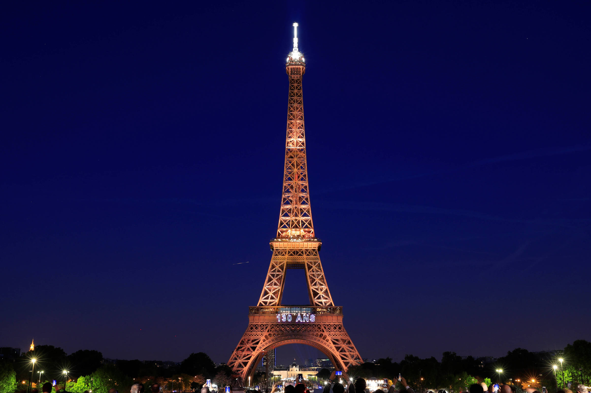
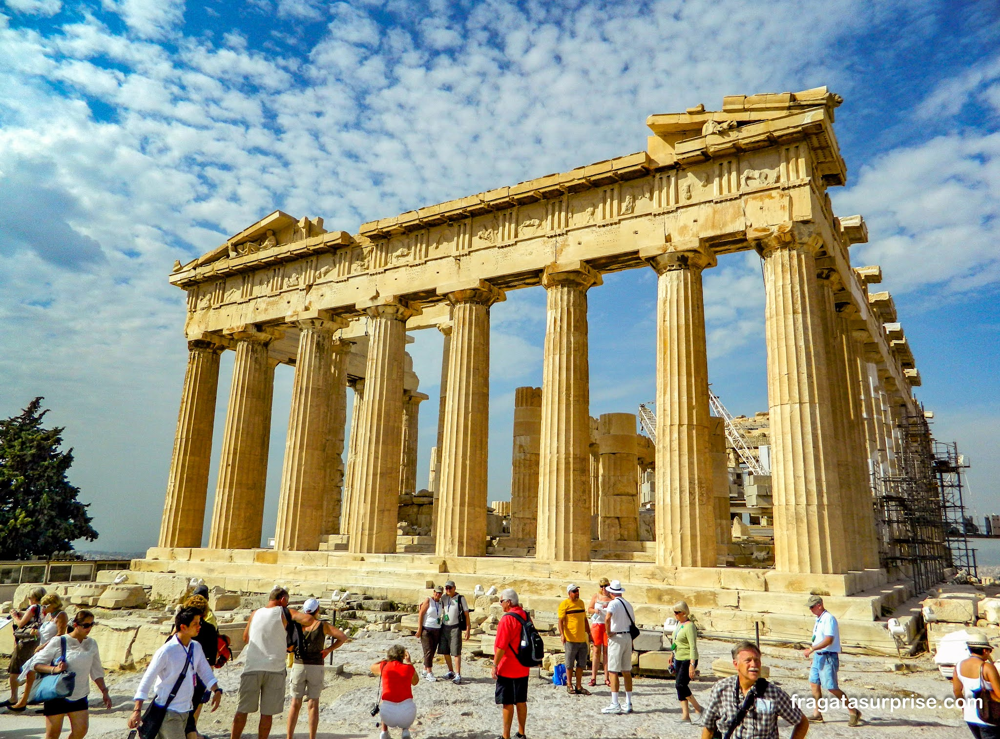
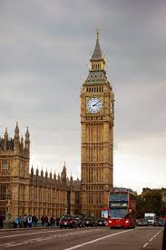
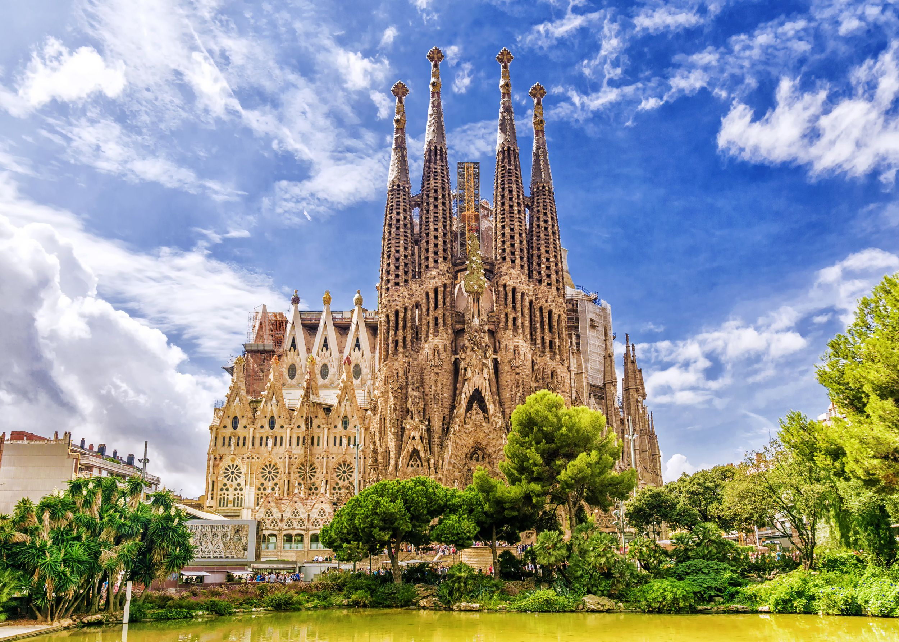

Torre Eiffel - França

Torre Eiffel é uma torre de treliça de ferro forjado no Champ de Mars, em Paris, França. Tem o nome do engenheiro Gustave Eiffel, cuja empresa projetou e construiu a torre
Atenas - Grécia

Atenas é a capital da Grécia. A cidade também foi o centro da Grécia Antiga, um império e civilização poderosos, e ainda é dominada por monumentos do século V a.C., como a Acrópole, uma cidadela no topo de uma montanha repleta de construções antigas, como o templo Partenon e suas muitas colunasre de treliça de ferro forjado no Champ de Mars, em Paris, França.
Colisel de Roma - ITÁLIA

Coliseu, também conhecido como Anfiteatro Flaviano, é um anfiteatro oval localizado no centro da cidade de Roma, capital da Itália. Construído com tijolos revestidos de argamassa e areia, e originalmente cobertos com travertino é o maior anfiteatro já construído e está situado a leste do Fórum Romano.
Torre Big Ben - INGLATERRA

O apelido “Big Ben” dirige-se ao sino. A torre onde ele e o grande relógio estão inseridos, atualmente chama-se Elizabeth Tower, em homenagem à rainha Elizabeth II. A qual até 2012 era intitulada de Clock Tower (Torre do Relógio). Sendo assim, saiba que o nome verdadeiro do sino é Great Bell e do relógio é Great Clock.
Sagrada Família - ESPANHA

A Sagrada Família foi originalmente concebida em 1881 pelo filantropo e livreiro Josep Maria Bocabella como um templo expiatório — um lugar de expiação — dedicado ao culto da Sagrada Família (o menino Jesus, sua mãe, a Virgem Maria, e seu pai, São José).